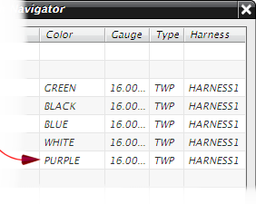

Update your data with an edited version of the connection list.
In the connection navigator, right-click and choose Import→Update.
Double-click rte1_logical_3.plmxml.
Expand the HARNESS1 node.
This data in this file is essentially the same as your original data, except that the color for C5 is changed from red to purple.
